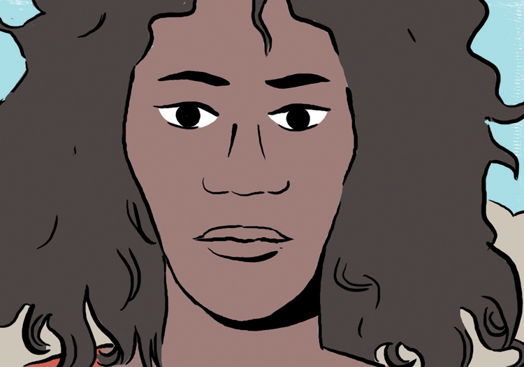
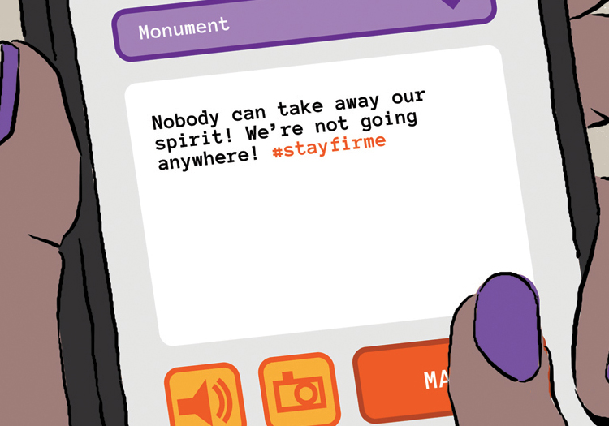
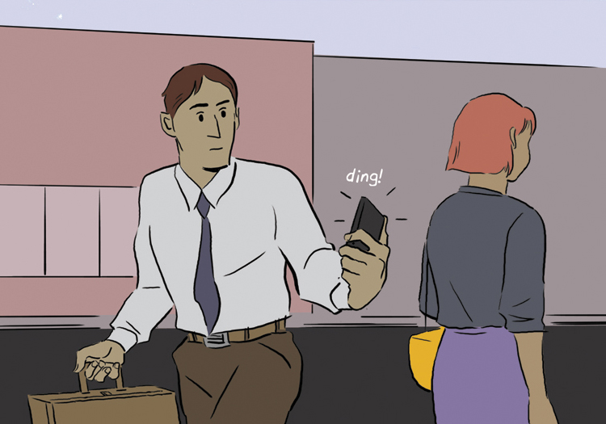
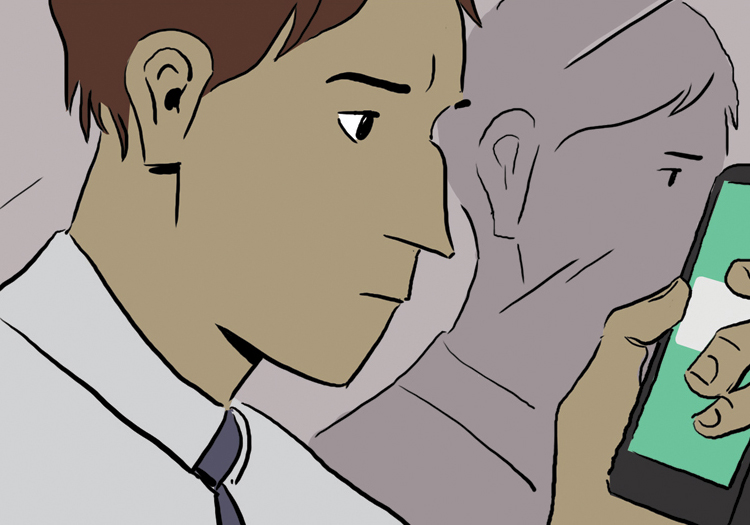
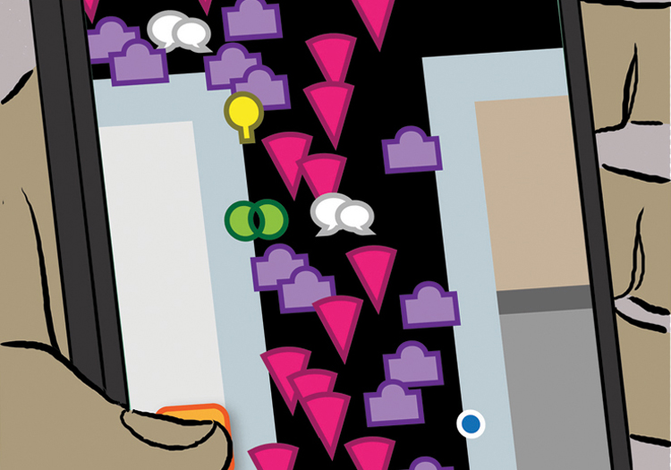
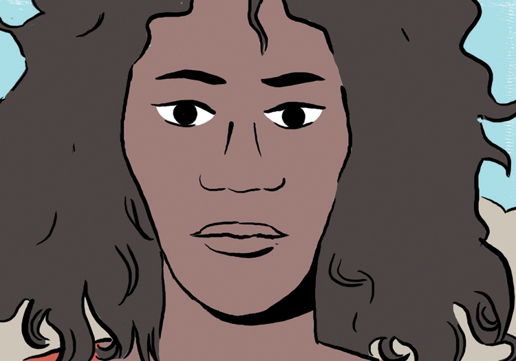
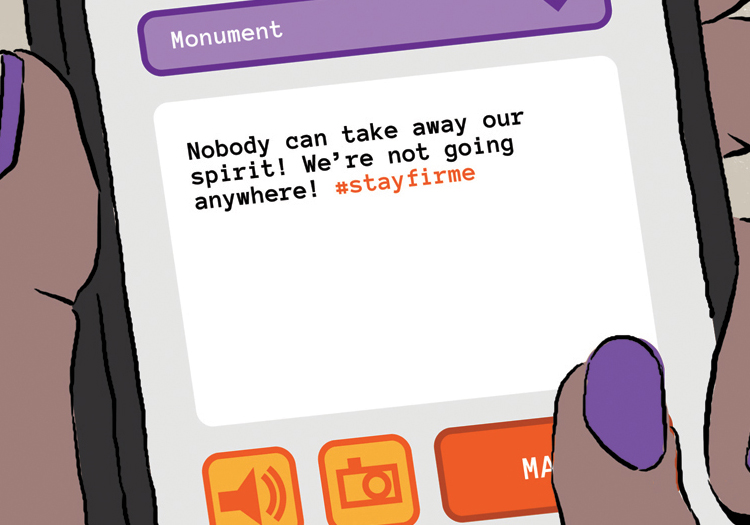
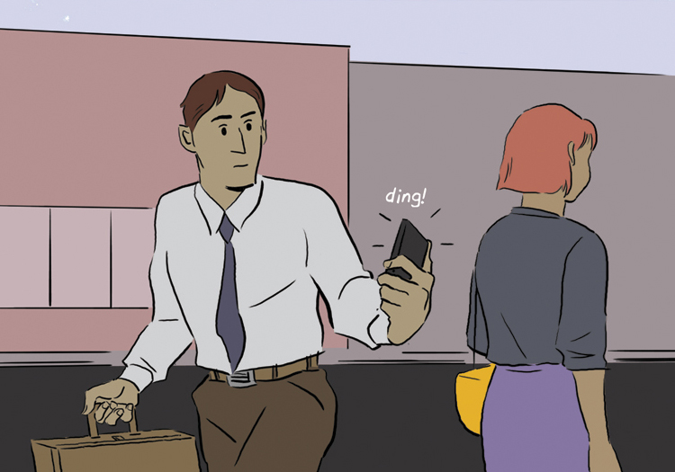
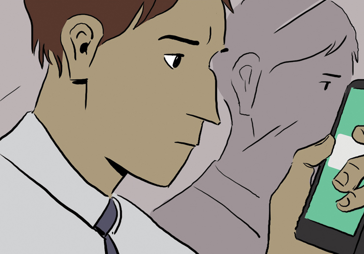
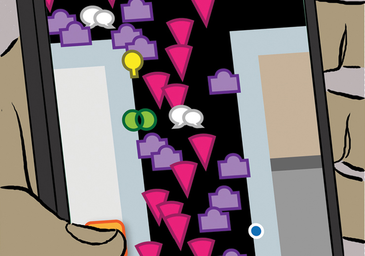

Storymarker
Overview
For this project, I was interested in exploring how multiple people might contribute their voice to a designed thing. One potential implication pointed to design inclusivity on a grander scale, representing the contextual experience of each individual. In order to be truly inclusive, I hypothesized that the designed "thing" would need to be malleable, shifting according to the individual who engaged with the system. I researched and explored different ways that an inclusive design system might be employed. This ultimately led to Storymarker, a participatory augmented reality app that allowed users to virtually layer location-specific, personal experiences encased in statue-like structures on top of physical spaces.
Trial / Trail 1
Inspired by current events surrounding the removal of confederate monuments, I began my investigation by looking at memorials, landmarks and historical plaques. This led me to the works of Kevin Lynch (1960) and NC State University's own Scott Townsend, whose design research deals with alternative mappings, hegemonic relationships of power and contextual insight into the lived experiences of different communities around the world. Attempting to synthesize this information, I envisioned a modular placard, something that would be installed in a public space to reflect changes in the community. I established guidelines in order to preserve previous messages as new messages developed over time (fig. 1). Although the experience of working with physical materials was rewarding, it was evident that the work was applying an alternate logic to a preexisting designed object, a letterboard (fig. 2).
Trial / Trail 2
I returned to the drawing board, aiming to clarify some of the differences between landmarks, monuments, memorials, places and points of interest. Out of this research came the idea of “graded membership” (Richter & Winter, 2014), a spectrum between common understanding and personal association of locations as landmarks (fig. 3).

Narrowing my problem space, I chose to design for sites of political protest. The "Monumos" mobile application would allow participants to archive their experiences during a protest via geo-specific markers. The virtual tag would act as a way to extend the temporary lifespan of these communal events. Participants would create a collection of monuments in the virtual reality space by contributing their own perspectives during the event. These markers would be aggregated, mapped, viewed and interacted with by future participants when entering into a location hotspot.
 









Although "Monumos" honed my investigation, some of my classmates expressed concern regarding the representation of each voice within the system. At this point it was clear that I needed to elaborate: how users could create more nuanced expressions of themselves in the app?
Trial / Trail 3
In developing the third provocation, I continued to look at the idea of communal visioning of space, only now trying to incorporate various ways I might portray complex emotions through design. My research included writings from Donald Norman (2007), Liz Sanders (2008) and philosopher Paul Ricoeur (1991), on emotional design, participatory design, psychogeography, geocaching and letterboxing.
The idea of storytelling emerged from my research. From the essay “Storytelling through design” (Sametz & Maydoney, 2003) I began to establish a loose framework based on crucial components of storytelling, which I used as a structure to inform my design prototypes (fig. 4). I started envisioning various ways a potential user would tell their stories and how those stories would be received by others. Inspired by Norman’s writings (2007) on our emotional attachment to keepsakes and ornaments (which are often regarded as low-brow or kitschy), I played around with the idea of model building as a way to imbue personal value into an object, or in this case a story within a space (fig. 5). I also toyed with alternate ways of mapping these aggregated markers according to the complexity of a user’s response (fig. 6).
Combining elements from all of these ideas, I moved towards a more developed interface. Using the storytelling framework from the research, I established a series of eight prompts for a user to answer in order to mark their narrative journey. These prompts could be answered in a number of different ways, via text, photos, video, shape-building, color and audio recordings (fig. 7).

Each of these responses would be encapsulated within segments, stacked to create totems within the virtual/augmented space. These monuments would be unpacked in the future by other users, who could interact with their content and create responses of their own. The final round of feedback concerned potential implications of the storytelling interface, namely the way designers deal with the disorder of people’s lives. Design often attempts to “contain,” a tactic that doesn’t always properly reflect some of our more chaotic behaviors. The current system restricts this kind of behavior, literally boxing it in. How could the design allow for more freedom, for more chaos? This points to further opportunities.
References
- Lynch, K. (1960). The Image of the City. MIT Press.
- Norman, D. (2007). Emotional Design: Why We Love (or Hate) Everyday Things. Basic Books.
- Richter, K. & Winter, S. (2014). Landmarks: GIScience for Intelligent Services. Springer.
- Ricoeur, P. (1991). Narrative Identity . Philosophy Today, 35(1), 73-81.
- Sametz, R. & Maydoney, A. (2003). Storytelling through design. Design Management Review, 14(4), 18-34.
- Sanders, E. & Stappers, P. J. (2008). Co-creation and the new landscapes of design. Codesign, 4(1), 5-18.
- Townsend, S. (2016). Re-reading Design Methodology and the “Toolbox” Metaphor. Design and Culture. DOI: 10.1080/17547075.2016.1187914
- Townsend, S. (n.d.). Social Pleasure and Design and Social Innovation: Community Work in Greece 2015-2017. Retrieved from http://www.imaginarycountry.org/
- Townsend, S. (n.d.). Ionian University Workshop 2016. Retrieved from http://www.imaginarycountry.org/